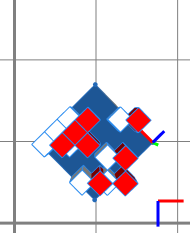
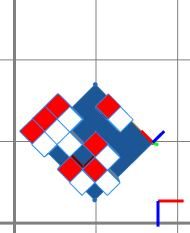

translate operation
mode selector
| abs | Absolute mode. The position is set to the given values. |
| rel | Relative mode. The translation is added to the current position. |
coordSystem selector
| scope, pivot, object, world | Name of the coordinate system in which the following values are given. |
x, y, z float The coordinates define a position in the coordSystem to which the current shape's scope (scope.t) is set if the mode is abs or a translation vector to apply if the mode is rel.
The translate operation translates the current shape (it manipulates the scope position scope.t). The coordinates can be defined in any coordinate system, and the translation can either be absolute (= set to x,y,z) or relative (= add the x,y,z vector).
Related
Examples
Translate a shape along the world x-axis

Init --> split(x) { '0.2 : split(z) { '0.2 : PP }* }*
PP --> 43% : primitiveCube()
X
translate(rel, world, 2, 0, 0)
color("#ff0000")
X
else : NIL
The red cubes are copies of the white cubes, translated by two units along the x-axis of the world coordinate system (i.e. the red axis on the bottom right).
Translate a shape along the object x-axis

Init --> split(x) { '0.2 : split(z) { '0.2 : PP }* }*
PP --> 43% : primitiveCube()
X
translate(rel, object, 2, 0, 0)
color("#ff0000")
X
else : NIL
The red cubes are copies of the white cubes, translated by two units along the x-axis of the object coordinate system (i.e. the red axis in the center).